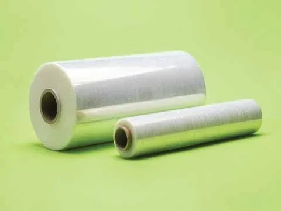
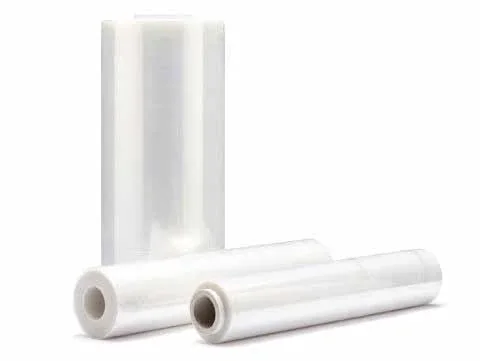
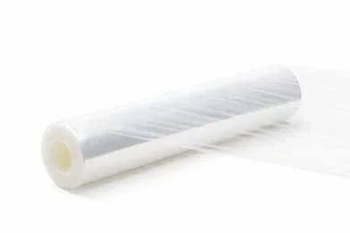
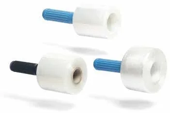
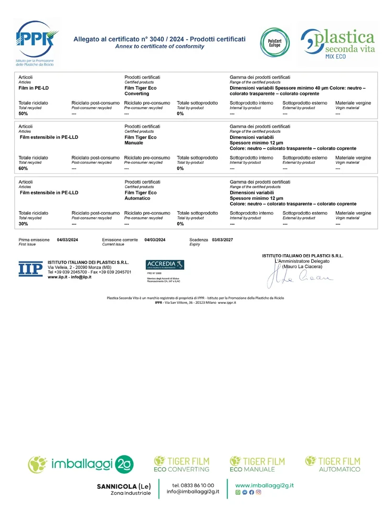

02 CONFEZIONAMENTO
Avvolgere.
Proteggere.
Ripensare.
Film per il confezionamento e la movimentazione. Con Tiger Film, le linee Eco Converting, Eco Manuale ed Eco Automatico danno spazio a materiale proveniente da processi di riciclo.
LA MATERIA, DA VICINO
Dal rotolo.
Alla protezione.
Compatto all’origine.
Flessibile quando serve.
 01 / La bobina
01 / La bobina 02 / La materia si distende03 / Il carico prende forma
02 / La materia si distende03 / Il carico prende formaTIGER FILM
Contenuto totale di riciclatoUna linea.
Tre modi di proteggere.
Valori riportati nell’allegato al certificato PSV MixEco n. 3040/2024.
Film in PE-LD
Spessore minimo 40 μm
Film estensibile in PE-LLD
Spessore minimo 12 μm
Film estensibile in PE-LLD
Spessore minimo 12 μm
LA LINEA TIGER FILM
IN MAGAZZINO
Le nostre bobine.
Formati e spessori diversi per il confezionamento manuale e per le macchine avvolgitrici. Raccontaci il carico da fasciare: troviamo la bobina giusta.
Chiedi un formatoIL PROGETTO TIGER FILM
Tre linee.
La stessa direzione.
Tiger Film dà un’identità ai progetti sviluppati da Imballaggi 2G sul tema della sostenibilità. La presentazione coinvolge l’intera filiera nella costruzione di un’economia circolare per gli imballaggi flessibili.
Le tre linee del certificato MixEco impiegano polietilene con contenuto di riciclato. L’allegato indica dimensioni variabili e colori neutro, colorato trasparente o colorato coprente.




Consulta l’allegato prodotti +

Dati riferiti alle linee certificate.
L’allegato riporta il contenuto totale riciclato e lo spessore minimo di ogni linea. Non specifica la ripartizione tra riciclato pre-consumo e post-consumo; le percentuali non vengono quindi attribuite a una delle due origini.
Apri l’originale ↗